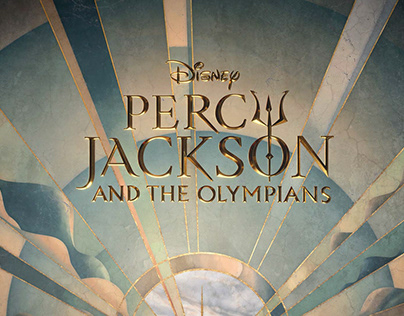
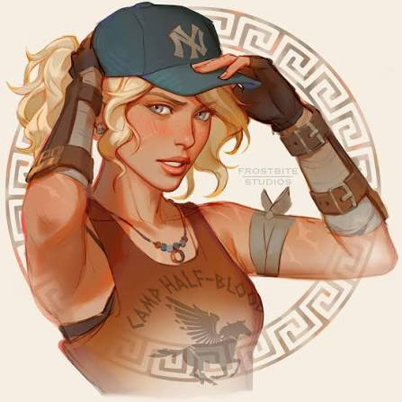
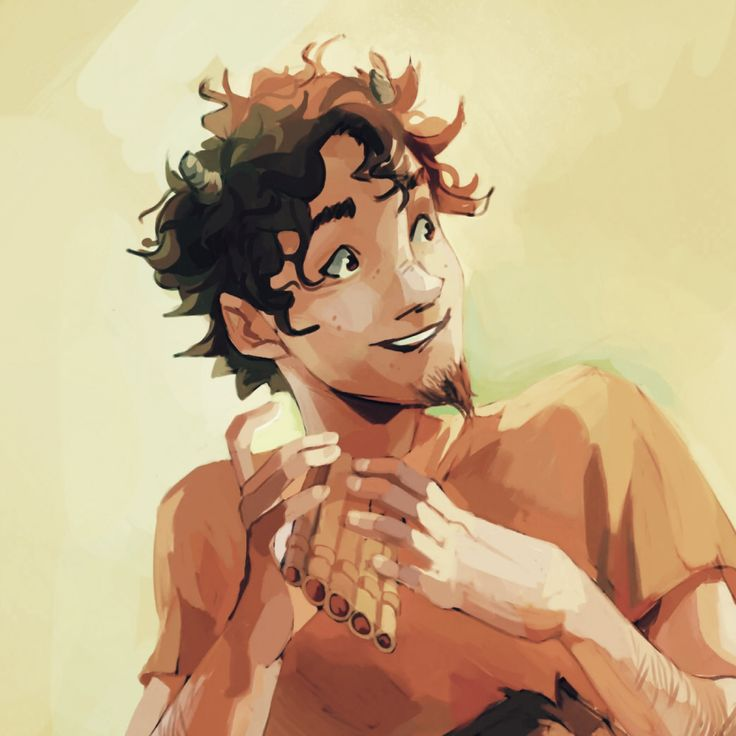
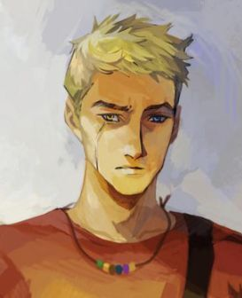
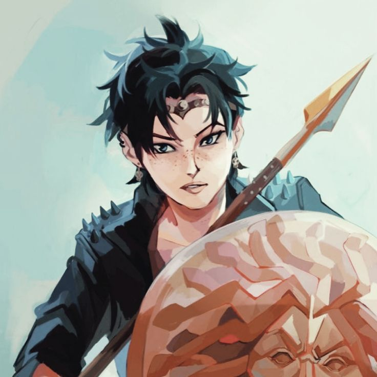
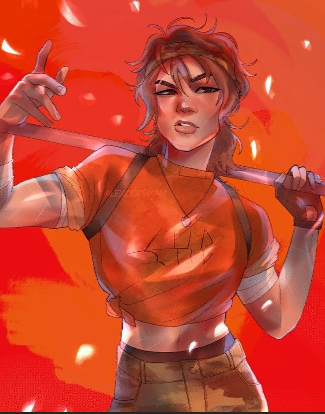
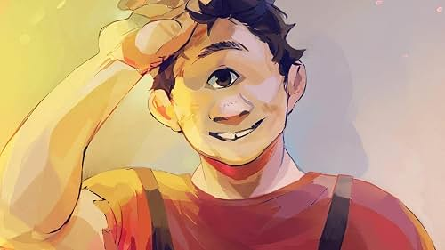
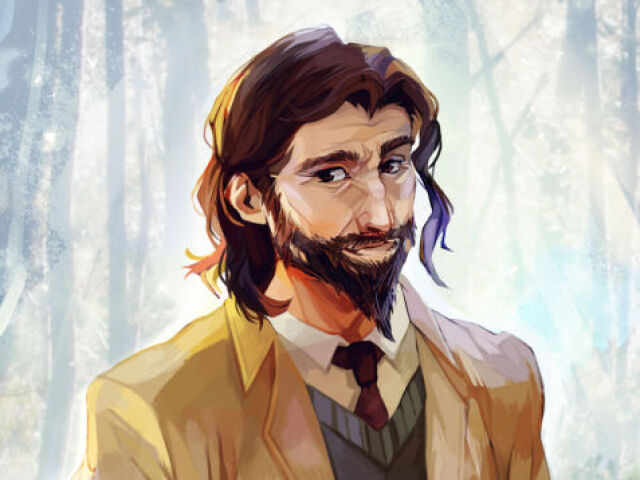

Os semideuses mais destemidos do mundo
O universo de Percy Jackson, criado por Rick Riordan, mistura a mitologia grega com o mundo moderno. A história acompanha Percy Jackson, um semideus filho de Poseidon, que descobre a existência de deuses, monstros e outros seres mitológicos. No Acampamento Meio-Sangue, ele conhece outros semideuses, como Annabeth e seus amigos, e participa de diversas aventuras e missões. A série aborda temas como amizade, família, coragem e identidade, enquanto reimagina os antigos mitos gregos nos dias atuais.

Acampamento Meio-Sangue

Percy Jackson
Filho de Poseidon, possui poderes sobre a água e é um dos principais heróis da história

Anabeth Chase
Filha de Atena, é muito inteligente, estratégica e habilidosa em combate.

Grover Underwood
Sátiro e melhor amigo de Percy. Possui conexão com a natureza e ajuda a proteger os semideuses

Luke Castellan
Filho de Hermes, é um excelente espadachim e tem um papel importante nos conflitos da história.

Thalia Grace
Filha de Zeus, possui poderes relacionados aos raios e é uma guerreira habilidosa.

Clarisse La Rue
Filha de Ares, é forte, corajosa e especialista em combate
Nico di Angelo
Filho de Hades, controla poderes relacionados ao mundo dos mortos e às sombras.

Tyson
Meio-irmão de Percy e filho de Poseidon. É um ciclope muito forte, resistente e habilidoso na criação e conserto de armas.

Quiron
Centauro responsável pelo treinamento dos semideuses no Acampamento Meio-Sangue.